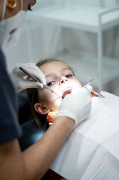
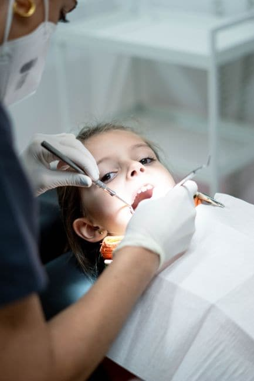

Especialidad
Odontopediatría
«Los niños pequeños: nuestros grandes protagonistas»

Odontopediatría
Simplemente con pasar andando por la Av. de Nuevo Mundo a la altura de la rotonda «de la fuente» se distingue nuestro cariño y dedicación por los más pequeños. Una fachada luminosa, moderna, con colores vivos, letras «AIRAM» y dibujos infantiles, muestran una pequeña parte de lo que significa atravesar esa puerta de cristal en la que la imagen de más niños te invitan a asomarte a curiosear.
Al entrar… nuestro famoso Photocall te hace desviar la mirada y buscar entre los colores, sonrisas y momentos divertidos de otros niños que, con el permiso de sus papis, hemos dejado reflejados en bonitas fotos. ¿Quieres llevarte la tuya a casa?, ¿qué disfraz vas a elegir?, ¿vas a querer ser «paciente» o ser tú mismo «el dentista»?. Grandes momentos que ellos ven nada más entrar a la clínica y les estimulan a bajar las escaleras a buscar ese «MUNDO DE NEMO» donde vamos a disfrazarnos y a cantar rodeados de los personajes de la famosa película.
Una vez abajo, trabajar con nuestra odontopediatra en la sala de Nemo, se convierte en un juego de risas, canciones y disfraces. En las siguientes visitas vienen incluso con su disfraz pensado, es emocionante ver como confían en nosotros y eso, no tiene valor. Es un inmenso honor ver cuando salen sonriendo de la consulta o cuando entran de nuevo directos a dar un beso a su doctor. Gracias por elegirnos, de corazón.
Odontopediatría – consejos para evitar el miedo al dentista
Si muchos adultos tienen miedo al dentista, imaginaros los niños. Somos totalmente consientes de ello y por eso el trato con los más pequeños es totalmente diferente a la manera de actuar con un adulto. Hay que involucrarse, hay que saber como hacerlo, hay que tener paciencia y hay que dedicar el tiempo necesario a cada niño.
Por eso nuestra Clínica es tan diferente desde que entras por la puerta. No tenemos batas blancas, pero sí pelucas naranjas y gorros. No tenemos salas frías de colores hospitalarios, pero sí tenemos todo lleno de colores divertidos, fotos, y hasta un «mundo submarino». Disfraces, pelucas, cuentos, puzles educativos… todo y todos preparados para recibir al «príncipe o princesa de la casa».
Desde vuestro lugar de Padres os queremos dar algún consejillo para evitar el miedo:
- No les engañes: los niños odian que les digas que van al parque y se encuentren en la consulta del dentista. Mentirles va a aumentar el desagrado que puedan sentir al entrar el dentista en lugar de al parque.
- Haz que los niños os acompañen al dentista: deben entender que es algo normal y que está dentro de su vida saludable.
- Preséntale a su dentista: es fundamental que exista un vínculo afectivo entre el odontólogo y tus hijos. Nosotros siempre tratamos de construirlo. Esa confianza reducirá cualquier miedo o ansiedad.
- Planifica una tarde divertida: organiza una tarde donde visiten su tienda de juguetes favorita después de la visita al dentista o disfruta después de los increíbles parques que tenemos en Boadilla. Así, recordarán el día con emociones positivas.
- Mantener hábitos correctos: es importante que inculques en tus hijos hábitos de vida saludable que le permitan entender qué debe hacer y lo normalice lo máximo posible. Poco a poco, día a día. Evita los errores que te comentaremos en la siguiente pestaña: «falsas creencias».
- No es solo para cuando duele: lleva a tus hijos al dentista aunque no tengan problemas. De echo así es como te recomendamos su primera visita (sólo para conocernos, ver las instalaciones) también puedes acudir en las jornadas de puertas abiertas con nuestros payasos, pintacaras, magos, etc. Si sólo les llevas cuando sienten algún dolor o deben realizarse algún tratamiento, vincularán la consulta con algo negativo.
- Hazlo como algo cotidiano: Aunque te cueste llevar a tus hijos al dentista, no permitas que la consulta sea parte de un gran evento que nunca realizan. Debe ser algo totalmente normalizado y habitual.
Es imprescindible la confianza entre la familia y el odontólogo y más aún entre vuestros hijos y nosotros. Los adultos ya nos conocéis, sabéis como nos gusta trabajar, que experiencia tenemos y que nos gusta respetar unos códigos éticos que parece que se van perdiendo en la profesión. Los niños no lo saben, no saben si sabemos hacer bien nuestro trabajo o no, si las instalaciones son de calidad, o si éticamente su doctor va a hacer lo más correcto, además de profesionalmente, ni que es lo que le vamos a hacer. Tenemos que demostrárselo, tenemos que ganar esa confianza, y para eso trabajamos de esta forma tan especial con ellos. Es un inmeso honor ver cuando salen sonriendo de la consulta o cuando entran de nuevo directos a dar un beso a su doctor. Gracias por elegirnos.
Odontopediatría – errores frecuentes o falsas creencias de los padres
Hay determinados hábitos muy extendidos popularmente que deberíamos controlar con respecto a la salud bucodental de nuestros hijos. Os quiero poner algunos ejemplos con los que incluso, quizás no estéis de acuerdo:
- No cuidar (o tratar) los dientes de leche: los dientes de leche se caen sí, pero hasta que eso sucede las caries pueden provocar dolor, infecciones, pérdida de espacio, alteraciones en la erupción de los dientes definitivos… No dejes que un diente de leche mal cuidado le suponga un problema mayor en el futuro
- No limpiar la boca de los bebés hasta que no le salen los dientes: es verdad que la caries solo puede darse desde que empieza a salir el primer diente, pero antes podemos reducir el número de bacterias de la boca y mantenerla bien cuidada. Incluso recomendamos limpiar la boca al bebé después de cada toma de lactancia.
- Usar pasta dentífrica sin flúor: el uso de pastas con una cantidad de flúor menor a 1000 ppm no protegen frente a la caries, según recientes estudios. Debemos tener cuidado con las cantidades de pasta que ponemos en el cepillo de los más pequeños, pues no debe ser excesiva, pero nunca prescindir del flúor. Existen además actualmente en el mercado multitud de pastas pediátricas incluso de agradables sabores para ellos.
- Dejar que se cepillen los dientes sin supervisión: poco a poco deben aprender a cepillarse por sí solos, claro, pero un niño de 4 años no sabe cepillarse todas las caras de los dientes correctamente… Hasta esa edad, es mejor que primero empiece él solito mientras le enseñas, y luego hagas tú un repaso final.
- No limpiar la lengua: la lengua es el lugar perfecto para miles de bacterias, cepíllala con cuidado para que no le den arcadas, y poco a poco se irá acostumbrando.
- Llevarle al odontopediatra sólo cuando le empieza a doler un diente: gran parte de los pacientes que acuden por primera vez al dentista lo hacen cuando tienen ya una molestia. Esto es una pena y un gran error y más en el caso de los niños, porque siguiendo las indicaciones adecuadas sobre higiene bucal se pueden prevenir muchos problemas mayores en el futuro. Por no mencionar lo complicado que se hace para el niño iniciar un tratamiento dental en esas condiciones. Cuanto antes acuda al Odontopediatra mucho mejor. Conocernos y jugar a disfrazarnos y cantar les ayuda a venir con confianza y sin temores.
- Darle besos en la boca: darles besos en la boca, o soplar la comida, o meternos el chupete del niño en la boca. Con todos esos gestos lo único que vamos a conseguir es transmitirle nuestras bacterias (que son mucho más “agresivas”) al niño.
- Dar algún alimento (sólido o líquido) justo antes de irse a dormir: el cepillado más importante del día es el de por la noche porque por la noche las bacterias tienen mucho más tiempo para «trabajar», la lengua no se mueve, se seca la boca y todo ello beneficia a las bacterias. Es fundamental que cuando se vayan a dormir tengan los dientes limpios. Durante la noche es cuando más fácilmente se producen las caries.
- Picotear en exceso: ese “picoteo” suele ser con alimentos poco sanos y llenos de azúcar procesado (zumos, batidos, galletas, patatas fritas, etc.). Multiplicamos las ocasiones en las que se produce los cambios de pH (nivel de acidez de la boca) y por tanto se multiplican las veces al día que “se ataca al diente”, y además con alimentos muy azucarados.
- Mojar el chupete o la tetina del biberón en sustancias azucaradas: al exponer a los dientes a esos alimentos tan azucarados se producen caries muy agresivas en los bebés, a los cuales además no se les suele cepillar los dientes después de ese uso indebido del chupete. Un hábito muy extendido y muy dañino.
Odontopediatría – selladores dentales, ¿cuándo?
Un sellador es una resina muy líquida, o barniz, que se extiende sobre la superficie rugosa del diente es decir fosas, surcos y fisuras. Se hace para reducir el riesgo de caries ya que al cubrir esas superficies rugosas, la retención bacteriana será menor al ser más lisas, y facilitaremos la higiene.
Se suelen colocar en los molares definitivos cuando éstos salen, SIN QUE SE CAIGA NINGUNO DE LECHE, por detrás de los molares de leche. Esto sucede a las 6 años aproximadamente.
Es una medida de prevención muy sencilla, duradera, eficaz y que no requiere de ningún desgaste previo en el diente ni de ningún otro tipo de actuación más que la de repartir ese barniz sobre los surcos del diente siendo por tanto rápida e indolora.
El momento ideal es cuando ya aparecen las caras masticatorias de esos 4 molares definitivos. Si no puedes distinguirlos puedes consultarnos sin ningún compromiso.
Odontopediatría – caries en dientes de leche y/o en dientes definitivos
Al igual que existen caries en los adultos y en los dientes permanentes o definitivos, también existen caries en los dientes de leche o temporales. Incluso a veces es más fácil en temporales, puesto que la higiene no es tan correcta como debiera, y la ingesta de azúcares e hidratos de carbono suele ser mayor.
Es muy importante detectar las caries a tiempo incluso cuando éstas afectan a la dentición temporal. Son dientes que deben ser reemplazados sí, pero que además tienen una pulpa (nervio) muy voluminoso en determinadas etapas por lo tanto la caries puede afectar también al nervio incluso a la pieza definitiva. Estos procesos pueden ser exactamente igual de dañinos y de dolorosos en un diente de leche que en un diente de un adulto por lo que no conviene dejar que avance.
Existen determinados momentos en los que esas caries, se pueden dejar avanzar, vigilarlas, o incluso en lugar de tratarla se puede extraer la pieza de leche si el definitivo está lo suficientemente desarrollado.
Pero esto es algo que tiene que valorar tu odontopediatra, incluso con la necesidad de realizar una radiografía, ya que no es valorable «a simple vista» o con un «sino duele no pasa nada». Si tienes dudas sobre pequeñas manchas oscuras o incluso agujeros visibles en los dientes de tu hijo, puedes consultarnos sin compromiso y te explicaremos la necesidad o no de realizar algún tratamiento. Te daremos consejos para el correcto desarrollo bucodental.
Odontopediatría – reparar, curar o extraer de dientes temporales
¿Porqué me recomiendan reparar o curar un diente de leche si se va a caer? ¿Por qué no quitarlo directamente?
Un error muy común o una falsa creencia de los padres, es pensar que si el diente de leche está cariado no pasa nada porque se va a caer y después saldrá otro nuevo. O incluso que si ese diente está mal, basta con quitarlo y esperar al definitivo.
El poder quitar directamente la pieza dañada, va a depender de la pieza que sea, y de la edad del niño. O dicho de otra manera, va a depender del grado de evolución en el que se encuentre el diente permanente. Es decir, si el diente permanente está cerca de poder erupcionar o salir porque su tiempo de desarrollo se ha completado dentro del hueso, cuando quitemos el diente de leche, podrá salir el diente definitivo puesto que ya está desarrollado y en condiciones para salir. Pero esto no es así en muchos casos y en este lugar tendremos dos opciones:
- Continuar con la idea de extraerlo pero será necesario colocar un mantedor de espacio. Debería ser evidente que si la pieza definitiva no está desarrollada del todo (no ha madurado aún dentro del hueso), no va a poder salir aún. Por tanto si quitamos prematuramente el diente de leche, el espacio que éste ocupa y que le corresponderá al definitivo va a ser ocupado por el resto de los dientes presentes en la boca, cerrando así la salida al definitivo en el futuro. Por tanto si decidimos quitar un diente de leche de forma prematura a la salida de su correspondiente definitivo, se debe colocar un mantenedor de espacio que «guarde/sujete» el espacio que le corresponderá al diente definitivo cuando esté preparado para salir.
- Realizar el tratamiento necesario en el diente para que no siga avanzando del deterioro, para que no se provoque dolor, y para que no aparezca infección. Lo normal es que con limpiar la caries y realizar un empaste, el problema pueda quedar resuelto. Pero en determinadas ocasiones, y debido al gran avance de la caries junto con el gran volumen pulpar que estas piezas presentan, la caries llega a afectar al nervio y se hace necesaria la realización de una Pulpotomía. En el siguiente punto te hablamos de ella para que entiendas lo que es.
Te insistimos en que un diente de leche, tiene vitalidad y por tanto los procesos que le afectan caries, etc., son igual de importantes y pueden ser igual de dolorosos que los de un diente permanente en un adulto. No hay que restar importancia a la dentición de leche, ni caer en errores populares o falsas creencias de «como es un diente de leche, no pasa nada porque se va a caer». Podemos ayudarte con cualquier duda que tengas, es muy importante cuidar la salud dental de los peques.
Odontopediatría – ¿que es una pulpotomia?
Como explicábamos en el punto anterior, cuando la caries es muy extensa, puede afectar al nervio del diente incluso en los dientes de leche. Es más, como la cavidad del nervio (cámara pulpar) es muy voluminosa en la dentición temporal, es fácil que esto llegue a ocurrir si dejamos avanzar una caries demasiado.
La pulpotomía será necesaria por tanto, cuando la caries afecte al nervio del diente de leche, y no sea posible realizar la extracción del mismo porque su correspondiente diente definitivo no haya alcanzado el desarrollo suficiente aún como para salir o erupcionar a la boca.
El tratamiento consiste en algo parecido a lo que en adultos llamamos Endodoncia (coloquialmente conocida por «matar el nervio»), pero con salvedades.
Cuando la caries llega al nervio, se debe limpiar toda la superficie cariada y en esta fase llegaremos a la cámara del nervio. Con la pulpotomía lo que vamos a realizar es un «vaciado» del paquete vasculonervioso que existe en la cámara del nervio para que no quede ningún resto de tejido orgánico ni de bacterias ni de necrosis que nos pueda causar infección posterior. En los adultos además de limpiar la cámara pulpar, también se continúa por todos los conductos que siguen hacia las raíces. Pero en los niños el proceso termina o se limita tan sólo a la cámara pulpar.
Contado de esta manera puede parece más complicado de lo que es, y más para un niño, pero es un proceso sencillo y rápido, y procuramos que el niño esté cómodo en todo momento. Podemos explicarte más detalles personalmente si lo necesitas.
Odontopediatría – ¿para qué poner mantenedores de espacio?
Tal y como hemos ido comentando en los puntos anteriores, en los casos en los que se decide extraer un diente temporal, en lugar de curarlo, hay que tener muy en cuenta el desarrollo que presenta el diente definitivo que deberá ocupar su lugar.
Mediante una radiografía (un acto totalmente inocuo para el niño con el uso de delantal plomado y radiografías digitales de baja exposición) podemos calcular cuanto desarrollo presenta el diente definitivo dentro del hueso, y por tanto determinar cuanto tiempo falta para que este diente salga o erupcione en boca.
Si el diente definitivo está suficientemente desarrollado, saldrá a boca en un breve espacio de tiempo, con lo cual no será necesario usar mantenedores de espacio.
Si el diente definitivo no ha alcanzado aún el desarrollo suficiente como para erupcionar, tardará en salir (en ocasiones año/s). Por lo tanto en ese tiempo el resto de la dentición que está en constante evolución y cambio, se moverá ocupando ese espacio. Si ocupan ese espacio, taparán la salida del diente permanente, que aún está desarrollándose impidiendo que pueda salir al sitio correcto o incluso en ocasiones manteniendo el diente dentro del hueso sin poder salir NUNCA (dientes incluidos).
Permitidme insistiros en que no hay que restar importancia a la dentición de leche, ni caer en errores populares o falsas creencias de «como es un diente de leche, no pasa nada porque se va a caer». Podemos ayudarte con cualquier duda que tengas, es muy importate cuidar la salud dental de los peques.
